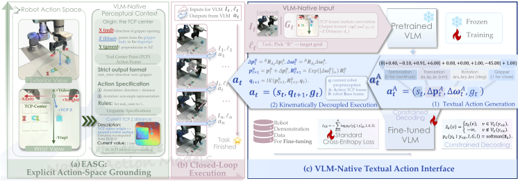
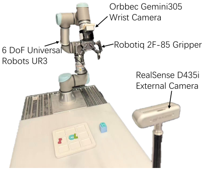
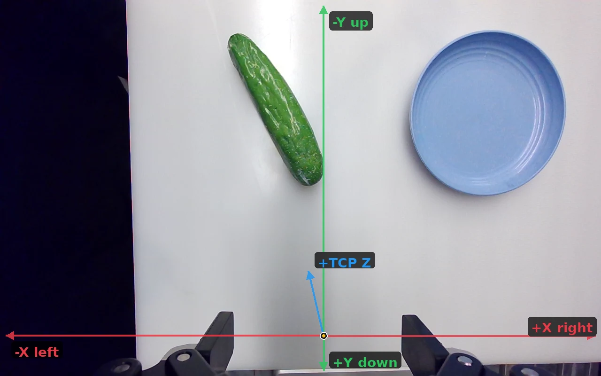

Explicit action-space grounding
Anchor a local action frame at the current TCP and project its origin and axes into the wrist view.
The VLM predicts motion in this common frame, with inverse kinematics executing it on each robot.
 Cannot Zero-shot
Cannot Zero-shotVLA:
Tokenized Action Representations | Action Experts | Action Pretraining
EXPLICIT ACTION-SPACE GROUNDING
Unleashing the manipulation capabilities of VLMs with Explicit Action-Space Grounding
1 Zhejiang University 2 Shanghai Artificial Intelligence Laboratory 3 Tsinghua University
tl;dr: We show that pretrained VLMs can perform zero-shot robotic manipulation with explicit action space grounding, and the same action interface can support subsequent robot-data fine-tuning.
ABSTRACT
Pretrained vision-language models (VLMs) already exhibit strong visual, spatial, and reasoning capabilities relevant to robotic manipulation. A key challenge in turning these capabilities into generalist manipulation policies is how to expose these capabilities through an appropriate action interface. Vision-language-action (VLA) models provide a unified trainable policy, but typically introduce learned action tokens, action heads, or action experts whose semantics must be acquired from robot trajectories before the model can act. In contrast, modular foundation-model-based manipulation methods can exploit pretrained VLM capabilities for zero-shot manipulation, but rely on external planning and control scaffolds that are not end-to-end trainable as a unified continuous-action policy. We introduce EASG, an Explicit Action-Space Grounding framework that bridges these two paradigms. EASG makes the semantics of a continuous robot action space directly observable in the VLM’s perceptual context by projecting a tool center point (TCP)-centered action frame into first-person observations, while expressing actions through the VLM’s native textual generation interface. This allows pretrained VLMs to directly translate their existing visual-spatial reasoning into executable robot actions, without robot-action pretraining or auxiliary learned modules. At the same time, the same interface supports direct fine-tuning with robot trajectories, allowing the model to continuously improve upon the manipulation capabilities unleashed by EASG. We demonstrate that EASG enables zero-shot manipulation and generalization across object positions, categories, and robot embodiments, while remaining effectively trainable in continuous action spaces. These results suggest that, given an appropriate action interface, pretrained VLMs can themselves serve as native action models for robotic manipulation.

A UNIFIED ACTION INTERFACE

Anchor a local action frame at the current TCP and project its origin and axes into the wrist view.
The VLM predicts motion in this common frame, with inverse kinematics executing it on each robot.
Serialize translation, rotation, state, and gripper commands with the pretrained vocabulary — no new action head required.
Given a demonstrated action sequence y* = (y1*, …, yN*), fine-tune the VLM directly with standard causal language-model cross-entropy.
Keep autoregressive generation native while restricting outputs to valid action formats and numeric precision.

REAL-WORLD EVALUATION
We evaluate EASG on a 6-DoF UR3 with wrist-mounted RGB-D and external cameras across rigid, articulated, deformable, precise, and long-horizon tasks.
Task Group 1 measures native zero-shot manipulation on simpler tasks, while Task Group 2 tests whether robot-data fine-tuning can extend EASG to more precise, complex, and long-horizon tasks.
| Type | Task | Task description |
|---|---|---|
| Rigid | 1.1.1 | Grasp the cucumber |
| 1.1.2 | Pick up the block | |
| 1.1.3 | Pick up the banana and put it on the plate | |
| Articulated | 1.2.1 | Close the laptop |
| 1.2.2 | Push the drawer closed | |
| Deformable | 1.3 | Fold the towel |
| Type | Task | Task description |
|---|---|---|
| Deformable | 2.1 | Fold the T-shirt in half. |
| Articulated | 2.2 | Open the laptop. |
| Precise | 2.3.1 | Pick up the ring and put it on one of the pegs. |
| 2.3.2 | Hang the cup on the peg. | |
| Long-horizon | 2.4.1 | Open the drawer, then put the Rubik's Cube in the drawer. |
| 2.4.2 | Put the grapes in the drawer, then close the drawer. |
Real-world task setups. See the paper appendix for the full object group included in the evaluation.
ZERO-SHOT MANIPULATION
Qwen-3.8-27B + EASG | Evaluation of 30 trials per task
Drop the stitched exterior + wrist clip here
1.1.1 · Grasp the cucumberGrasp the cucumber
Q1 · COMPARISON
We use Qwen-3.8-27B for comparison.
Around 30 demonstrations are sufficient for fine-tuned VLA policies to catch up.
Q1 · ROBUSTNESS

For tasks that EASG-VLM can complete zero-shot, objects may move and rotate FREELY within the manipulation area.
Stitched exterior + wrist video
Q2 · SIMULATION
Qwen-3.5-0.8B exceeds OpenVLA and approaches π₀-FAST in LIBERO under the same input observation settings.
METHOD
Q2 · REAL WORLD
We fine-tune the Qwen-3.8-27B following the textual action learning procedure on Task Group 2, which contains more challenging tasks that cannot be completed by Qwen-3.8-27B zero-shot.
Q3 · CROSS-EMBODIMENT TRANSFER
Success rate (%) · click a task number to reveal the three-view window.
| Task number | ||||||
|---|---|---|---|---|---|---|
| UR3 | 76.7 | 60.0 | 53.3 | 36.7 | 76.7 | 80.0 |
| Flexiv | 73.3 | 56.7 | 50.0 | 40.0 | 73.3 | 80.0 |

1.1Rigid manipulation: grasp, pick up, and place objects
zero-shot manipulation frontier of pretrained VLMs across model families and scales.Task codes mark the first model to reach ≥50% zero-shot success.
It's EASG's main setting:
with the TCP-centered action frame projected into the wrist view
and metric depth preserving physical information.


@misc{yi2026vlms,
title = {VLMs are Native Action Models: Unleashing the Manipulation Capabilities of VLMs with Explicit Action-Space Grounding},
author = {Yi, Jingkun and Zhang, Shujie and Zhou, Zirui and Wang, Haoxiao and Sun, Haiyang and Dong, Yuhang and Xu, Xudong and Shen, Xing and Zhang, Tao and Liu, Yong and Zhang, Jiangning},
year = {2026}
}VLMs are Native Action Models.